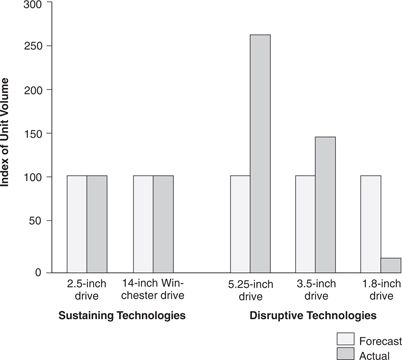

An unusual amount of market information has been available about the disk drive industry from its earliest days—a major reason why studying it has yielded such rich insights. The primary source of data, Disk/Trend Report, published annually by Disk/Trend, Inc., of Mountain View, California, lists every model of disk drive that has ever been offered for sale by any company in the world, for each of the years from 1975 to the present. It shows the month and year in which each model was first shipped, lists the performance specifications of the drive, and details the component technologies used. In addition, every manufacturer in the world shares with Disk/Trend its sales by product type, with information about what types of customers bought which drive. Editors at Disk/Trend then aggregate this data to derive the size of each narrowly defined market segment and publish a listing of the major competitors’ shares, carefully guarding all proprietary data. Manufacturers in the industry find the reports so valuable that they all continue to share their proprietary data with Disk/Trend.
In each edition, Disk/Trend publishes the actual unit volumes and dollar sales in each market segment for the year just past and offers its forecasts for each of the next four years in each category. Given its unparalleled access to industry data spanning two decades, this publication offers an unusual chance to test through unfolding market history the accuracy of past predictions. Over all, Disk/Trend has a remarkable track record in forecasting the future of established markets, but it has struggled to estimate accurately the size of new markets enabled by disruptive disk drive technologies.
The evidence is summarized in Figure 7.1, which compares the total unit volumes that Disk/Trend Report had forecast would be shipped in the first four years after commercial shipments of each new disk drive architecture began, to the total volumes that were actually shipped over that four-year period. To facilitate comparison, the heights of the bars measuring forecast shipments were normalized to a value of 100, and the volumes actually shipped were scaled as a percentage of the forecast. Of the five new architectures for which Disk/Trend’s forecasts were available, the 14-inch Winchester and the 2.5-inch generation were sustaining innovations, which were sold into the same value networks as the preceding generation of drives. The other three, 5.25-, 3.5-, and 1.8-inch drives, were disruptive innovations that facilitated the emergence of new value networks. (Disk/Trend did not publish separate forecasts for 8-inch drives.)
Figure 7.1 The Four Years after the First Commercial Shipments: Sustaining versus Disruptive Technologies

Source: Data are from various issues of Disk/Trend Report.
Notice that Disk/Trend’s forecasts for the sustaining 2.5-inch and 14-inch Winchester technologies were within 8 percent and 7 percent, respectively, of what the industry actually shipped. But its estimates were off by 265 percent for 5.25-inch drives, 35 percent for 3.5-inch drives (really quite close), and 550 percent for 1.8-inch drives. Notably, the 1.8-inch drive, the forecast of which Disk/Trend missed so badly, was the first generation of drives with a primarily non-computer market.
The Disk/Trend staff used the same methods to generate the forecasts for sustaining architectures as they did for disruptive ones: interviewing leading customers and industry experts, trend analysis, economic modeling, and so on. The techniques that worked so extraordinarily well when applied to sustaining technologies, however, clearly failed badly when applied to markets or applications that did not yet exist.